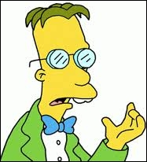

Tu es branchée scientifique !

Tu aimes l'abstraction, tu manies les concepts avec plaisir, tu raffoles des prises de tête où la logique est reine. Ah, la magie des énigmes ! Ton univers est peuplé d'arguments et de raisonnements. si tu n'es pas déjà accro, tu devrais apprécier les polars. Bref, aucun doute tu as une âme de scientifique.
Quelques idées de métiers
Chercheuse
Il vérifie des hypothèses par des expérimentations appropriées. Il élabore et organise les interprétations théoriques des expériences et des analyses. Il rend compte de ses travaux et de ses découvertes par divers moyens de diffusion : publications, conférences…
La réalisation d'expériences nécessite parfois de manipuler des produits et appareils dangereux. Le chercheur a des horaires irréguliers et il peut effectuer des déplacements (conférences, séminiares…). Des connaissances en informatique sont indispensables.
Dans le domaine de la recherche appliquée, le chercheur effectue les travaux de conception et de développement des nouveaux produits ou des nouveaux procédés en milieu industriel. Il est plutôt spécialisé s'il travaille dans un service ou un laboratoire d'une grande entreprise, et plutôt polyvalent dans une PME.
Volcanologue
Il participe à la compréhension de l’origine du volcanisme dans le temps et à l’approche du mécanisme déclencheur des fumerolles, des gaz et des éruptions. Son travail se partage entre le terrain et le laboratoire.
Sur le terrain, le volcanologue observe, étudie, expérimente, effectue des prélèvements de roches, fait des relevés de mesures, installe des équipements électromagnétiques sur les volcans actifs et ceux qui sont éteints. Les campagnes sur le terrain durent plusieurs mois par an.
En laboratoire, il analyse les échantillons, confronte ses notes, procède à des expériences et à des recoupements. Son travail débouche sur un rapport et des conclusions qui préconisent un modèle scientifique sur l’objet de sa recherche.
Agent Secret / Espion

Un espion ou une espionne (25 % des agents secret sont des femmes), est une personne qui travaille dans l’espionnage extérieur pour le compte de son pays.
Par extension, on appelle aussi espion un agent secret dont l’activité clandestine dépasse la collecte de renseignements. A savoir : le sabotage, la destruction, la captation ou l’effacement de données, la capture de matériel, l’enlèvement, l’infiltration ou l’exfiltration d’individus, la désinformation, la manipulation…
Depuis la guerre froide, l’espionnage a fortement évolué. Les tendances sont aujourd’hui le renseignement de type industriel, économique et technologique, notamment par le cyberespionnage. Toutefois, sans pour autant jouer au James Bond, l’espion moderne est encore formé à des actions plus classiques.